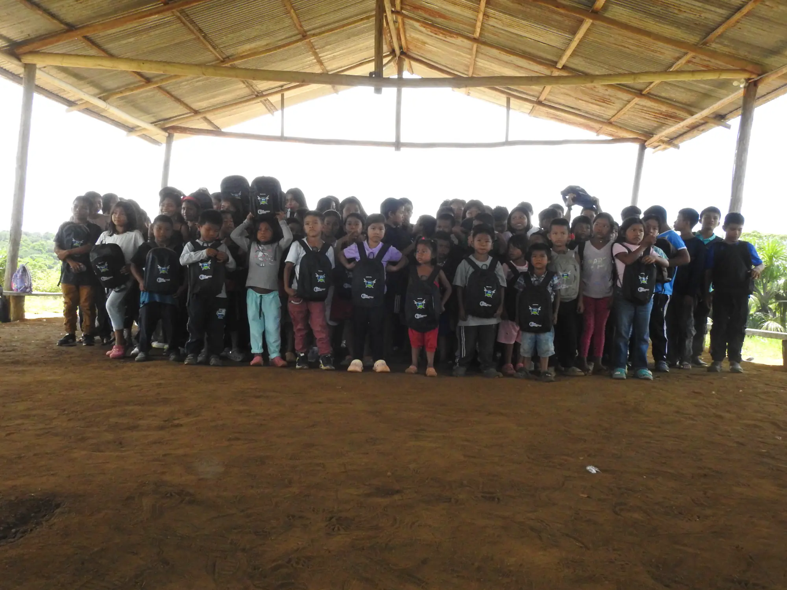
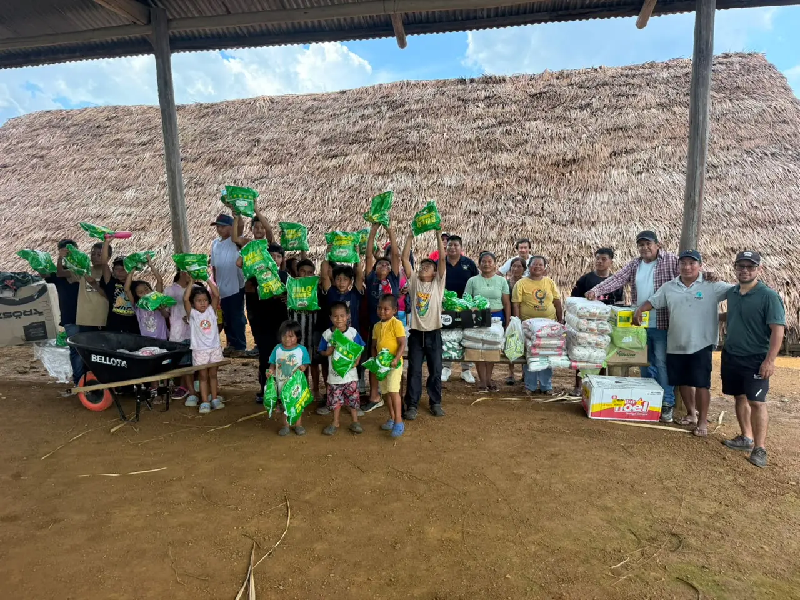
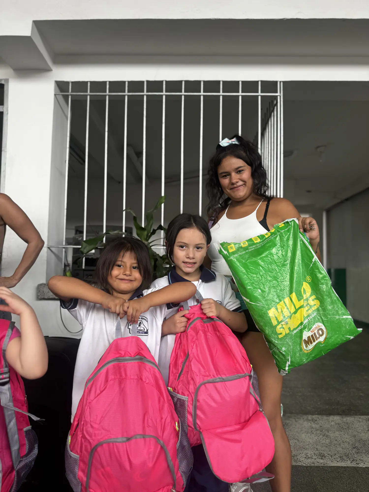
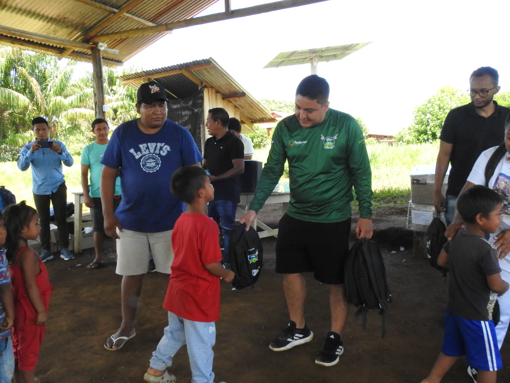
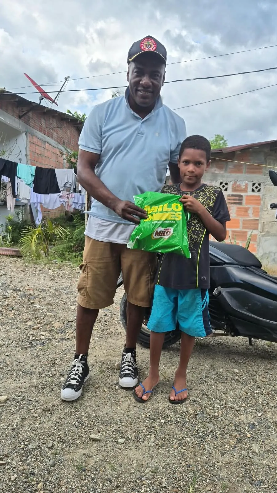
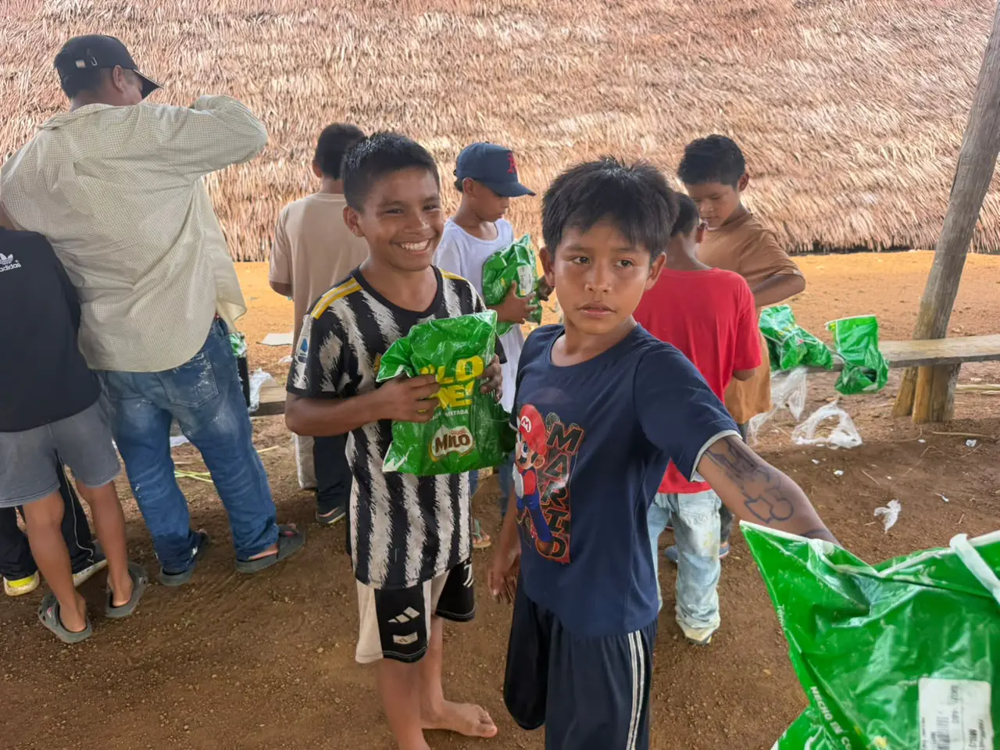
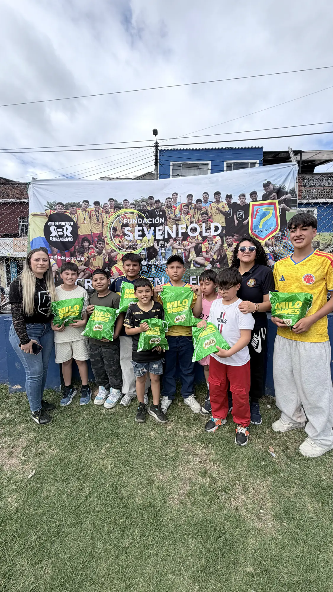

Community in Mitú · February 2026150
School kits
Backpack, notebooks, colored pencils, sharpener, pencil case and eraser for students from different communities.

Sowing knowledge and hope also means nurturing confidence, independence and the ability to contribute something valuable to society.
At Fundación Sevenfold Colombia we believe academic training is a pillar of our young people's development: it gives them tools that complement their path in sport and lets them build sustainable life plans, on and off the pitch.
That's why we build partnerships with educational institutions to open access to scholarships and to technical, technological and professional training, especially for the young people in our sports programs.
School kits and shoes that reached children and young people in four territories.

Backpack, notebooks, colored pencils, sharpener, pencil case and eraser for students from different communities.

A second delivery, this time at a school, to extend educational support to young people in the territory.

Milo Shoes, donated by Nestlé, for children and young people of the Pacific.

Milo Shoes donated by Nestlé, for children from an Indigenous community in Mitú.

For children and young people who train with us in Bogotá.

Milo Shoes donated by Nestlé, for children and young people in Pereira.
Tap a story to read it in full.
Cooperation agreements that bring technical, technological and professional education closer to the young people in our sports programs.
An agreement to bring their academic programs closer and promote scholarships and educational benefits.
An agreement to strengthen access to technical and technological training.
Through these partnerships we support young people in life plans that combine their sporting and academic development.
We want to establish an Institute for Vocational Training and Human Development, specialized in the sports sector with a focus on 7-a-side football.
Planned programs. They aim to help athletes, coaches, referees and community leaders develop the skills to work in the sports sector, in Colombia and abroad.

Donate and help expand access to education. Your contribution may qualify for a donation certificate and tax benefits in Colombia, under current regulations.



In Mitú, Vaupés, supporting education also means providing tools that help children and young people learn. In February 2026, in a community in Mitú, we delivered 150 school kits to students from different communities in the municipality. Each kit included a backpack, notebooks, colored pencils, a sharpener, a pencil case and an eraser.
In May we continued at a school with a new delivery of 20 school kits, extending educational support to young people in the territory.
Through these actions we aim to provide tools for schoolwork and to support the new generations in their learning.







A pair of shoes can make a difference in a child's life: it lets them walk comfortably, play, spend time with others and enjoy their daily activities with greater well-being. That's why, together with Nestlé and its donation of Milo Shoes, we took this initiative to different territories in Colombia.
The delivery reached Río Pepé in Chocó, an Indigenous community in Mitú, Vaupés, and children and young people in Bogotá and Pereira: four destinations where this donation became a concrete contribution to their communities.
In total we delivered 420 pairs of shoes: 150 in Chocó, 100 in Mitú, 60 in Bogotá and 110 in Pereira. This partnership shows how working together can connect resources with those who need them and contribute to the well-being of children and young people across the country.